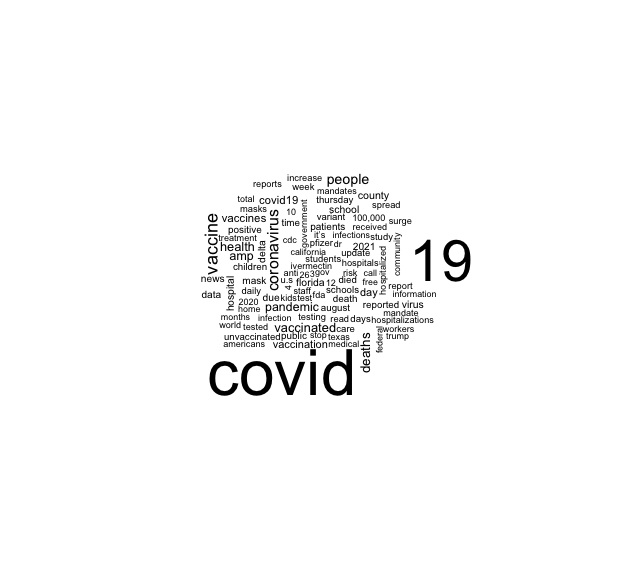

6 SNSデータ & テキスト分析 - tidytext
ときには暴力的にもなり,悲惨な結果をもたらすこともありますが,ソーシャルメディア（以下,SNS）は今では１人ひとりが自分の「声」を社会に発信するための人気のメディアとなっています.SNSは,良い意味でも悪い意味でも,マスメディアのフィルターを通さないため,よりストレートに人々の声を伝えることができます.
SNSのデータは一般的に,個々のユーザーが作成し,公開プラットフォームを使用して収集されます.これらの公開プラットフォームには,Twitter,Google,Facebook,InstagramなどのSNSが含まれます.こうして収集されたSNSのデータは,経済,政治などの社会の出来事や自然災害などについて,ほぼリアルタイムで発信される人々の考え,言いかえれば今現在の「社会」の声を知る上で有益な情報ソースとなっています.
SNSを通して新型コロナウィルスに対する「社会」の声を聞く方法をとりあげます.人々がどの程度新型コロナウィルスに関心を持っているのか,また新型コロナウィルスはどのように受け止められているのか等,こうした点を知るために,SNSで発せられたテキストをRを使って分析します.これにより,新型コロナウィルスに関する「社会」の声の一端を理解できると思います.
6.1 「社会」の関心を知る - gtrendsR
人々は新型コロナウィルスにどれほど関心を寄せているのでしょうか.これを知るために,さまざまな機関が行うアンケート調査からマスメディが実施する大規模な世論調査にまで及ぶ,さまざまな調査が利用可能です.こうした調査は有益な情報を提供し,自治体・政府の政策立案の基礎となることもあります.しかし,こうした調査は信頼性が高いものの,リアルタイムで人々の関心を知るにはどうしても遅れますし,「生」の声 - 調査機関,マス・メディアのフィルターを通さない声-を知るには限界があります.
わたしたちは常日頃,何かに対する情報を知りたいとき,インターネット検索を行っています.その意味では検索はわたしたちの関心を示していると言っても良いでしょう.インターネット検索の巨人は,言うまでもなく,Googleです.Googleは膨大な検索データを蓄積していますが,これをもとにGoogleトレンドと呼ばれるサービスを提供しています.Googleトレンドは人々の関心を知る上で強力なツール です.トレンドの計算にあたっては検索のピーク時を100としたときの相対指数です.したがって数値の大きさは検索条件を変更すると変わってしまうことに留意する必要があります.
Googleトレンドでは,地域,期間を指定し,任意の検索キーワードの相対的な人気の程度の推移を調べることができます.Rには,こうしたGoogleトレンドのデータを取得するパッケージgtrendsRやtrendyが開発されています. 本資料ではgtrendsRを利用します.それではこのパッケージをインストールし,新型コロナウィルスに対する人々の関心を見ることにしましょう.インストールするためにはコンソール画面に次のように入力し,エンターキーを押してください.
install. packages("gtrendsR")次にこのパッケージを利用するために,スクリプト画面に
library(gtrendsR)と入力し,[Run]をクリックします.これでgtrendsRを利用できます.最初に,Googleトレンドページでも調べることができますが,特定のキーワードを検索し,その推移を見てみましょう.このためのgtrendsRの基本的なコードは次のようになります.
gtrends(keyword="", geo ="", time ="")- keyword=“ ”には検索キーワードを入力します.複数のキーワードを入力したい場合はc( )を使い,たとえば,keywords = c(“新型コロナウィルス”,”抗原検査”)と入力します.
- geo= “ ”ではiso２コードを使って検索地域を指定します.デフォルトではall,つまり全世界です.複数の地域を指定したい場合は,同じくc( )を使います.たとえば,日本,アメリカ,中国を指定したい場合,geo=c(“JP”,”US”,”CN”)と入力します.
- time=“ ”によって検索期間を指定できます.たとえば,
- 過去４時間の場合はtime =“now 4-H”
- 過去7日間の場合はtime = “now 7-d”
- 過去３ヶ月の場合はtime = “today 3-m”
- 過去5年間の場合はtime = “today + 5-y”
- 任意の期間指定の場合, “Y-m-d Y-m-d”を使います.たとえば,2019年6月27日から2020年1月21日までを指定したい場合,time = “2019-06-27 2020-01-21”と入力します.
それではgtrendsRを使って,キーワードを「COVID-19」,「PCR」,「AKB」,地域を「日本」,期間を「2020年1月21日から2021年8月13日」とし,検索トレンドをみてみましょう.「AKB」は比較のために入れていますが,国民的アイドルを凌ぐ「COVID-19」と「PCR」の「相対的な人気」が分かります.スクリプト画面に次のように入力し,実行[Run]してください.
trend <- gtrends(keyword=c("COVID-19","PCR","AKB"), geo="JP", time = "2020-01-21 2021-08-18")この例では結果をtrendという名前をつけたオブジェクトに容れています.
summary(trend)## Length Class Mode
## interest_over_time 7 data.frame list
## interest_by_country 0 -none- NULL
## interest_by_region 5 data.frame list
## interest_by_dma 0 -none- NULL
## interest_by_city 5 data.frame list
## related_topics 0 -none- NULL
## related_queries 6 data.frame listを実行すると,オブジェクトリストが表示されます.
summary()で確認されたtrendの中には上記のようなデータフレームが含まれています.
- interest_over_timeは時間を通じた関心であり,検索キーワードの期間のヒット数を示すデータフレームです.
- interest_by_regionは地域ごとの関心を示すデータフレームです.
- interest_by_cityは同様に都市ごとの関心を示すデータフレームです.
- related_queriesは関連した検索語が入ったデータフレームです.
この他,国ごとのデータ,DMAごとのデータ,関連したトピックごとのデータもありますが,ここでの例では国をJP,複数の検索ワードを指定したために,いずれもNULL（データなし）となっています.オブジェクトtrendの中のinterest_over_time（時間を通じた関心）はgtrendsRの中のplot.gtrends関数によって簡単にグラフ化できます.次のように入力してみてください.以下のようなグラフが表示されます.
plot(trend)新型コロナウィルスの拡大以前には人々の関心は,新型コロナウィルスよりも,国民的人気アイドルAKBにあったことが分かります.しかし,3月末から4月初頭にCOVID-19に対する関心は急上昇します.PCR検査はいったん2月末に大きな関心を呼びます.これはおそらくダイヤモンドプリンセス号の新型コロナウィルスの集団発生に起因すると思われます.
その後,PCRに対するヒット数も低下しますが,しかし感染者数が拡大するにつれて,4月にふたたび大きく注目されています.興味深いことにPCR検査の「人気」はパンデミックの波と一致しているようです.それに対してCOVID-19の「人気」は2020年代半ばに低下し、以後、一貫して低い水準にとどまります.これは人々がCOVID-19に慣れ、関心を失って来ていることを物語っているのかもしれません.AKBの人気が大幅に伸びていくことを期待したいものです.
6.2 「社会」の声を集める - rtweet
ツイッターをつうじて,新型コロナウィルスに関する社会の声を集めることにします.Rにはツイッターからデータを収集する便利なパッケージrtweetが開発されています.他にもtwitteRというパッケージもありますが,今ではrtweetがツイッター・データにアクセするための標準的ツールとなりつつあります.
ツイッター情報を取得するためには,API(Application Programming Interface)認証という面倒な事前準備が必要でしたが,rtweetを利用することで,必要なのはTwitterアカウント(ユーザー名とパスワード)だけとなりました.認証を受けるには,Rの対話型セッション中にTwitterのAPIにリクエストを送るだけです.つまり,search_tweets(),get_timeline()などのrtweetパッケージの関数を使用するだけです.自分のTwitterアカウントに代わってWebブラウザのポップアップから認証を行うことができます.これによりトークン（パスワード生成）が作成され,今後の利用のために保存されます.
ツイッターデータ収集のために,rtweetは多くの関数を提供しています.たとえば,現在の日本のトレンドを知りたい場合は次のように入力します.
get_trends("japan")収集されたトレンドワードをみてみましょう.
get_trends("japan") %>%
select(trend) %>%
head()## # A tibble: 6 × 1
## trend
## <chr>
## 1 親子3人全員
## 2 #おやつがどっさり届く
## 3 ゲリラ豪雨
## 4 在任期間
## 5 #総理大臣やってみた
## 6 東京都内これは2021-09-01時点のトレンドワードです.View() を利用すれば、すべてを見ることができます.
rtweetパッケージの中でもっとも有益な関数はsearch_tweets()です.search_tweets()は検索語queryによって指定されたツイートデータを得ることができます.基本的なコードは以下のようになります,
rtweetパッケージの中でもっとも有益な関数はsearch_tweets()です.search_tweets()は検索語queryによって指定されたツイートデータを得ることができます.基本的なコードは以下のようになります.
seach_tweets(q="検索語",n = 取得するツイッターの数)q= “corona virus”と入力すると,“corona”と“virus”の両方の検索語と含んだツイートを探します.つまり検索語の間にスペースを容れると,and検索になります.OR検索を利用する場合は,q=“corona OR virus”とします.
取得できるツィート数にはAPIの制限があります.ツィーターの場合は,6～9日分の過去のツイート,1回のAPIコールで18,000ツイート,1時間に100回のリクエストに制限されています.このため特定のイベント（例えば自然災害や選挙やなど）についてデータを集めるさいには,先を考えてデータ収集を行う必要があります.
それでは新型コロナウィルスに関するツイートを集めてみましょう.新型コロナウィルスに関連した検索後としては“covid-19”, “coronavirus”が考えられます.両方のいずれかを含む（つまりOR検索）ツイートを探してみましょう.上限を18,000ツイートとしておきます.さらに,リツイートは除外するために,include_rts=FALSE（リツイートを含める場合はTRUEです）を入れ,言語を英語に指定するために,引数lang=“en”と指定します.そして結果をオブジェクトtweet_covidに容れます.
tweet_covid <- search_tweets(q="covid-19 OR coronavirus", n = 18000,include_rts = FALSE,lang = "en")これによってtweet_covidというデータフレームが出来上がります.コンソール画面に次のように入力すれば内容が表示されます.
tweet_covid## # A tibble: 18,000 × 90
## user_id status_id created_at screen_name text source
## <dbl> <dbl> <dttm> <chr> <chr> <chr>
## 1 1.05e18 1.43e18 2021-08-26 23:24:41 LINA05564177 "@CDCofBC… Twitt…
## 2 4.92e 8 1.43e18 2021-08-26 23:24:40 LeroyWesterling "Let’s b… Twitt…
## 3 7.24e17 1.43e18 2021-08-26 23:24:39 demsdestroyUS11 "The enti… Twitt…
## 4 7.24e17 1.43e18 2021-08-26 23:23:39 demsdestroyUS11 "The enti… Twitt…
## 5 4.12e 7 1.43e18 2021-08-26 20:56:48 scottawanga "She coul… Twitt…
## 6 4.12e 7 1.43e18 2021-08-26 23:24:37 scottawanga "You gott… Twitt…
## 7 1.75e 8 1.43e18 2021-08-26 23:24:37 cgilmart "Where’s… Twitt…
## 8 1.22e18 1.43e18 2021-08-26 23:24:35 ComishWeinroth "Only 7 I… Twitt…
## 9 4.06e 7 1.43e18 2021-08-26 23:24:33 dankatzradio "Judge Ka… Twitt…
## 10 1.90e 9 1.43e18 2021-08-26 23:24:32 pressprogress "The US F… Twitt…
## # … with 17,990 more rows, and 84 more variables:
## # display_text_width <dbl>, reply_to_status_id <dbl>,
## # reply_to_user_id <dbl>, reply_to_screen_name <chr>, is_quote <lgl>,
## # is_retweet <lgl>, favorite_count <dbl>, retweet_count <dbl>,
## # quote_count <lgl>, reply_count <lgl>, hashtags <lgl>, symbols <lgl>,
## # urls_url <lgl>, urls_t.co <lgl>, urls_expanded_url <lgl>,
## # media_url <lgl>, media_t.co <lgl>, media_expanded_url <lgl>, …A tibble: 18,000×90から理解されるように、このデータフレームtweet_covidは18,000の行と90の列（変数）持ちます。しかし、hashtagsが含まれているため、変数の数が多くなっています.
そのそれぞれの行（観察値）は異なったツイートです.過去９日間（実際には,数時間のうちに18,000のツィートに達してしまいます）に,このキーワードを含むツィートがどれだけつぶやかれたのかをグラフにしてみましょう
rtweetパッケージの中のts_plot()関数によってその頻度を簡単にみることができます.次のように入力すると次のグラフが描かれます.
ts_plot(tweet_covid,by = "mins")ts_plot()関数のもっともシンプルな用法は２つの引数を指定するだけです.
ts_plot(データフレーム名,by="時間間隔の指定")データフレーム名はこの例ではtweet_covidです.by=によって時間の間隔“mins”, “hours”, “days”, “weeks”を指定できます.たとえば3日刻みを指定する場合は,by = “3 days”とします.この例ではby = “mins”によって１分の間隔を指定しています.
6.3 ツィッターテキストの分析 - tidytext
それでは「社会」の声を聞いてみましょう.ツイッターのテキストデータの分析には,Silge,Robinsonの両氏によって開発されたtidytextパッケージを活用することになります. 最初に,rtweetで集めたテキストデータを抜き出し,テキスト分析に利用しやすいようにデータを編集します.その上で,テキストデータを視覚的に表現することにします.おもな手順は次のとおりです.
- 文書の分割 ― トークン化
- nグラムへのトークン化
- 可視化 ― ワードクラウドとネットワーク
- センチメント分析
ここで言うトークンとは,テキストの単位として意味のあるもの ―たとえば,単語―であり,テキスト分析の対象となるものです.したがってトークン化とはテキストをトークンに分割することです.
6.3.1 文書の分割とトークン化
それでは具体的な作業に入ることにしましょう.おもな作業と利用関数は次のとおりです.
- 文書を単語に分割 unnest_tokens()
- ストップワーズの除去 anti_join(stop_words)
- 頻出語の可視化 wordcloud
(1) 文書を単語に分割 - unnest_tokens()
分析の対象はツイッターによってつぶやかれたテキスト部分です.そこで最初に,データフレームtweet_covidからつぶやかれた時間created_atとテキストtextの２つの変数を取り出しておきましょう.そしてその結果をオブジェクトtext_twに容れます.
text_tw <- tweet_covid %>%
select(created_at,text) # select()を使って特定の変数列を抽出View(text_tw)によってテキスト部分―text変数―をみると,たとえば,3行目に
“Teachers continue to throng vaccination centres in the five divisions of Kampala to receive their Covid-19 #Sinovac jab in adherence to condition pre-set by @GovUganda for reopening of schools_SportsUg ”
のように長い文書（複数の単語を連結したもの）があります.これではテキスト分析には適しません.テキスト分析のためには,さらに,それぞれのツィート文書を単語wordに分割する必要があります.テキスト文書を,整理された形式（tidy形式）で単語に分割するために,Rパッケージtidytextのunnest_tokens()関数を使います. この関数を利用するために,パッケージtidytextをインストールし,library()で呼び出しておきましょう.
install.packages("tidytext")
library(tidytext)それぞれ実行しておいてください.unnest_tokens()関数の書き方は次のようになります.
unnest_tokens(データフレーム名, 作成される変数列名,単語に分割する変数列名)上述のスクリプトにパイプでunnest_tokens()の命令を付け加えることにします.この例ではパイプ（％＞％）でつなげていますので,unnest_tokens()関数の中にデータフレーム名を書く必要はありません.
text_tw <- tweet_covid %>%
select(created_at,text) %>%
unnest_tokens(word,text) # unnest_tokens()を使ってtextをwordに分割この結果をView()やstr()でデータフレームの中をみると,以下の図のように,textが単語に分割され,word変数が作成されたことが分かります.
str(text_tw)## tibble [498,588 × 2] (S3: tbl_df/tbl/data.frame)
## $ created_at: POSIXct[1:498588], format: "2021-08-26 23:24:41" "2021-08-26 23:24:41" ...
## $ word : chr [1:498588] "cdcofbc" "can't" "imagine" "k" ...(2)ストップワーズの除去 ― anti_join(stop_words)
これによって整理されたデータフレーム（tidy形式）ができあがります.しかし,この図の変数wordの列をみると,at,the,for, ofなどの– よく使われますが,重要ではない–単語も抽出されています.こうした単語はストップワーズstop wordsと呼ばれます.テキスト分析にはストップワーズは不要ですので取り除くとします.
tidytextの中にはストップワーズを集めたデータセットstop_wordsが事前に用意されています.これとanti_join()関数を使ってstop wordsを取り除きます.anti_join()関数は基本的に２つのデータフレームを結合する関数ですが,anti_から想像されるようにマッチしなかった行からなるデータフレームを作成します.書式は以下のとおりです.
anti_join(x,y)このスクリプトは,データフレームxの行が,データフレームyの行とマッチしなかったすべての行を返します.それでは次にストップワーズの入ったデータフレームを読み込みます.
data("stop_words") # ストップワーズのデータセットを読み込みますデータフレームstop_wordsとtext_twを結合します.結合した結果をtext_tw01というオブジェクトに容れます.
text_tw01 <- text_tw %>%
anti_join(stop_words) # anti_join()を使ってstop_wordsとマッチしない行を取得この例でもパイプを使用していますので,最初のデータフレーム名は省略されます.anti_join()によってデータフレームstop_wordsの中に入っている行と一致しない,データフレームtext_twの行を返すことになります.つまり,text_twの中にあったat,of,toといったデータを持つ行がすべて取り除かれます.
しかし,text_twの中をみると,さらに,不要なword―おもにサイト名等を表現する単語―が抽出されているようです.これはfilter()関数を使って除去しておきます.最初に,不要なwordをピックアップし,まとめてno_wordsというベクトルに容れます.
no_words <- c("t.co","https", "it's", "1","2", "20yearshuaweieurope",
"tech4all","ixqblwihjg","sir","protocol","
cdcofbc","let’s","nx7a11n3ib","j23qrgxpfw","z6ogdektio","
3ivitcxnh0","dkvvsuzqqh","g8qp6ejsap","where’s’the","data.https","fgtgaeiyer","ge24cvhuxe","pvj0riwana","ymdnwkxgwk","s8qkrgo8vr","vqjzb1pc2h","
r45kkjqpbx") text_tw02 <- text_tw01 %>%
filter(!word %in% no_words) # filter()関数を使って除去.filter(条件)は条件にあった行を返しますが,ここでは条件の前に“!”をつけていますので,条件にあった行以外の行を返します.つまり,不要なword以外のwordを持つ行を返します.また,“x %in% y”は論理和を表現し,「xがyの中のどれかに一致する」場合を意味します.この例ではtextの中のwordが,no_wordsの中のどれかのwordに一致する,ということを意味します.
これで分析に利用可能な,259758行×2列のデータフレームtext_tw02が作成されました.次に,新型コロナウィルスに関わるツィッターにおいて「何」が—正確にはどのような単語が注目されているのかをみるかをために,wordcloudという手法を適用します.
(3)頻出語の可視化― wordcloud wordcloudとは,文章中で出現頻度の多い単語を選び出し,頻出語をその頻度に応じた大きさで雲のように描く手法です.この例で言えば,取得したツイッター文書からもっとも多く見られる単語を可視化することになります.wordcloud を使ってツイッター文書text_twの中の頻出語を可視化した結果が次の図です. wordcloud()関数を使って頻出語を出力するためには,tmというRパッケージも必要となります.そこで事前準備としてインストールし,呼び出しておきます.それぞれ次のように入力し,実行してください.
wordcloud()関数の基本コードは次のようになります.
wordcloud(出力させる単語の列, 出現頻度数,max.words=図示する最大単語数)それではこの書式にしたがってツイッター文書text_tw02にwordcloud()を適用してみましょう.
text_tw02 %>%
count(word) %>%
with(wordcloud(word,n, max.words = 100))ここではデータフレーム名を明示する必要があります.つまりどのデータフレームの中のどの列を利用するかをRに教える必要があります.データフレーム名を明示するために,text_tw$を使っています.また,表示する単語数はmax.words=によって100単語としています.これを実行すると,以下の図が得られます.
 人々がツイッターを使って新型コロナウィルス について発信するとき,おもにどのような単語が利用されているか.このwordcloudによって視覚的に捉えることができます.covidと19がもっとも多く使われています.この２つの単語もさほど意味がありませんので除外した方がよいかもしれません.次いで,vcaccine, vaccinated といった単語の出現頻度が高いということが理解されます.人々が新型コロナウィルスに対するワクチンに強い関心を寄せていることが分かります.